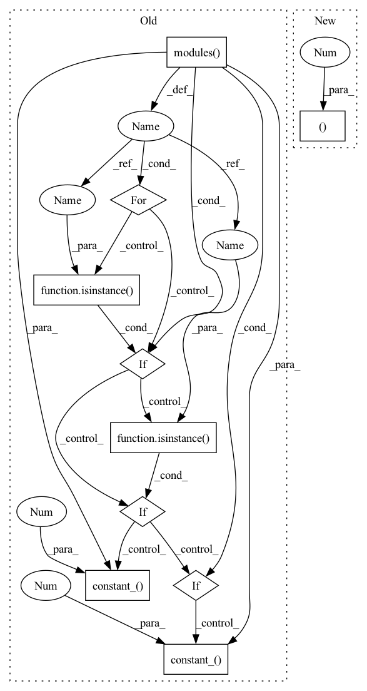

Pattern ID :1223

Before Change
self.fc5 = nn.Linear(512 * 7 * 7, 512)
self.bn5 = nn.BatchNorm1d(512)
for m in self.modules():
if isinstance(m, nn.Conv2d):
nn.init.xavier_normal_(m.weight)
elif isinstance(m, nn.BatchNorm2d) or isinstance(m, nn.BatchNorm1d):
nn.init.constant_(m.weight, 1)
nn.init.constant_(m.bias, 0)
elif isinstance(m, nn.Linear):
nn.init.xavier_normal_(m.weight)
nn.init.constant_(m.bias, 0)
def _make_layer(self, block, planes, blocks, stride=1):
downsample = None
if stride != 1 or self.inplanes != planes * block.expansion:
After Change
self.layer2 = self._make_layer(block, 128, layers[1], stride=2)
self.layer3 = self._make_layer(block, 256, layers[2], stride=2)
self.layer4 = self._make_layer(block, 512, layers[3], stride=2)
self.pool = nn.AdaptiveMaxPool2d((1, 1))
self.bn4 = nn.BatchNorm2d(512)
self.dropout = nn.Dropout()
self.flatten = nn.Flatten()
In pattern: SUPERPATTERN
Frequency: 3
Non-data size: 10
Instances
Fragment ID: 3444660
Project Name: yeyupiaoling/voiceprintrecognition-pytorch
Commit Name: 1b3e522b8bc2c0002ef6447094f8f57c6e4bdabe
Time: 2021-07-03
Author: yeyupiaoling@foxmail.com
File Name: utils/resnet.py
Class Name: ResNetFace
Method Name: __init__
Parent Class: nn.Module
Fragment ID: 3444661
Project Name: yeyupiaoling/voiceprintrecognition-pytorch
Commit Name: 1b3e522b8bc2c0002ef6447094f8f57c6e4bdabe
Time: 2021-07-03
Author: yeyupiaoling@foxmail.com
File Name: utils/resnet.py
Class Name: ResNetFace
Method Name: __init__
Parent Class: nn.Module
Fragment ID: 3444656
Project Name: lornatang/srgan-pytorch
Commit Name: 5cf838428d2fd83fd2fc39b794fdd8fb82ea91ed
Time: 2020-10-21
Author: liuchangyu1111@gmail.com
File Name: srgan_pytorch/model.py
Class Name: Discriminator
Method Name: __init__
Parent Class: nn.Module
Fragment ID: 3444720
Project Name: lornatang/esrgan-pytorch
Commit Name: 91405c6093508419a44d6313646c88ec681a90d2
Time: 2020-10-21
Author: liuchangyu1111@gmail.com
File Name: esrgan_pytorch/model.py
Class Name: Discriminator
Method Name: __init__
Parent Class: nn.Module